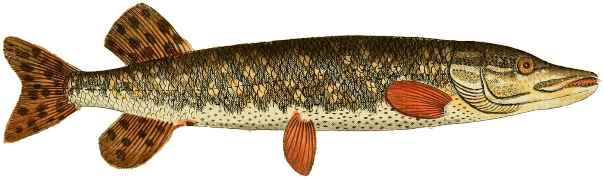

Garder possible
68 / 60 cm mini
Taille mini 60 cm, le tien : 68 cm.
Ouvert jusqu'au 25 janv. · 2 brochets max par jour.
Règle nationale, indicative · Signaler une erreur
Brochet
68 cm
n° 014

12 oct. 2026 · La Marne, Val-de-Marne (94)